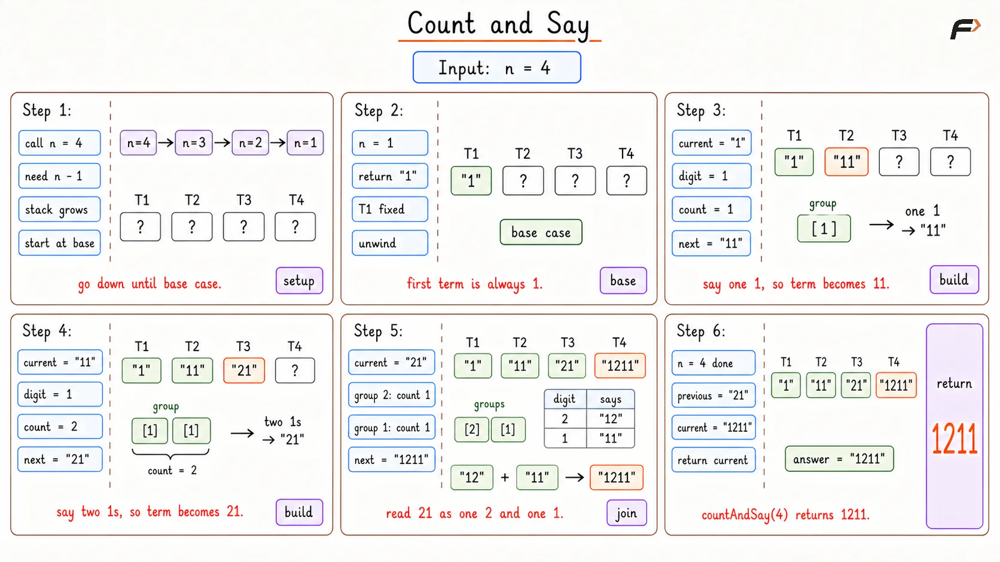

Count and Say: Generate the Nth Sequence Term
Given a positive integer n, return the n-th term of the Count and Say sequence. The sequence is defined as:
countAndSay(1) = "1" countAndSay(n) is made by reading and encoding countAndSay(n - 1).
Example 1
Input: n = 4
Output: "1211"
Explanation: 1st term is "1"2nd term reads "1" as one 1, so it becomes "11"3rd term reads "11" as two 1s, so it becomes "21"4th term reads "21" as one 2 and one 1, so it becomes "1211"
Example 2
Input: n = 1
Output: "1"
Explanation: The first term is directly defined as "1".
Approach
The definition of the problem is already recursive.
To get the n-th term, first get the (n - 1)-th term, then convert it using run-length encoding.
So the thought is:
countAndSay(n) = encode(countAndSay(n - 1))
This approach is very natural because it follows the problem statement exactly. The only thing needed after the recursive call is a helper function that reads the previous string and builds the next one.
Algorithm
If
nis1, return"1"because the first term is fixed and no encoding is needed.Recursively find the previous term. This is needed because every term depends only on the term just before it.
Scan the previous term from left to right and group equal consecutive digits together.
For each group, append the group size first, then the digit. This is the exact meaning of “count and say”.
Return the newly built string as the answer for the current
n.
Dry Run

Count and Say Dry Run
Solution
#include <bits/stdc++.h>
using namespace std;
class Solution {
private:
/*
Builds the next Count and Say term
from the current term.
*/
string buildNextTerm(string currentTerm) {
// Stores the newly generated term.
string nextTerm = "";
// Index is used to scan each group of equal digits.
int index = 0;
while (index < currentTerm.length()) {
// This digit starts the current group.
char digit = currentTerm[index];
// Count stores how many times this digit appears together.
int count = 0;
/*
Keep moving while the same digit continues.
This collects one complete group.
*/
while (index < currentTerm.length() && currentTerm[index] == digit) {
count++;
index++;
}
nextTerm += to_string(count) + digit;
}
return nextTerm;
}
public:
/*
Returns the nth Count and Say term
using the recursive definition.
*/
string countAndSay(int n) {
/*
The first term is fixed, so recursion
stops here.
*/
if (n == 1) {
return "1";
}
// Previous term is needed to build the current term.
string previousTerm = countAndSay(n - 1);
return buildNextTerm(previousTerm);
}
};
int main() {
// Driver code starts
int n = 4;
Solution obj;
cout << obj.countAndSay(n) << endl;
return 0;
}Complexity Analysis
Time Complexity: O(n * L), where L is the maximum length of a generated term, because each level processes one generated string.
Space Complexity: O(n + L) because recursion uses stack space and the next term string is also built.
Interview follow-up Questions
The step used to build the next term is run-length encoding. Each group is stored as its count followed by the digit.